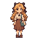
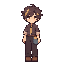
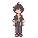

CHARACTERS OF THE ISLAND
先认得他们，
再一起度过四季。
把性格藏在轮廓里，把故事带在身上。
一本关于相遇、一起做东西，以及好好告别的人物画册。



海风会记得，每一个普通的日子。01 / 岛上的人
画面语言暖光 · 深紫棕描边 · 克制色阶
大小建议场景 64 px / 对话头像 128 px
02 / 四季行走与待机四方向 · 每向 6 帧 · 真实步伐与呼吸
03 / 基础造型的转面与剧情姿势
A SMALL RESPONSE / 细小的回应
04 / 对话里的他们
同一张脸，也要装得下不同的心情。